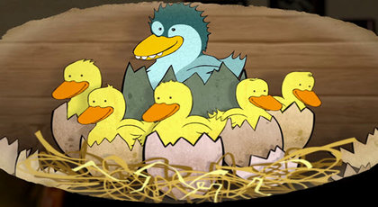

Çirkin Ördek Yavrusu

Çalıların içinde bir ördek kuluçkaya oturmuş yumurtalarını bekliyormuş. Uzun süredir tek başına oturmaktan sıkıldığı için yumurtaları
çatlar çatlamaz sevinçle vaklayarak kuluçkadan kalkmış.
“Artık çiftliğe dönüp oradakilere yeni ailemi gösterebilirim!” diye düşünmüş. Hepsi tam mı diye, cik cik öten yavrularını saymaya başlamış.
“Yo, olamaz!” demiş yumurtalardan birinin henüz çatlamamış olduğunu görünce. O sırada oradan geçen bir ördek, “Yuvanda hâlâ çatlamamış iri bir yumurta var,” demiş.
“Bahse girerim bir hindi yumurtasıdır.”
“Hindi yumurtasıymış, höh! O benim yumurtam,” demiş anne ördek ters ters. İç çekerek yumurtanın üstüne oturmuş.
Bu son yumurta da çatlayınca içinden iri, çirkin bir ördek yavrusu çıkmış. Anne ördek bu yavruyu görünce onun çirkinliğinden biraz utanç duymuş.
“Neyse ki diğer yavrularım güzel,” diye düşünmüş ve artık daha fazla vakit kaybetmeden çiftliğe gitmek istediği için yavrularını peşine takarak suya girmiş.
“Çirkin olanı hiç olmazsa iyi yüzüyor,” demiş anne ördek kendi kendine. “Öyleyse hindi olamaz. Çünkü hindiler yüzemez. Belki büyüdükçe güzelleşir.
Belki bir süre sonra da büyümesi durur.”
Ne yazık ki tam tersi olmuş. Çirkin Ördek giderek daha da büyümüş ve diğer ördeklerden daha da farklılaşmış. Çevresindeki hayvanlar onu hiç rahat bırakmıyor,
onunla hep ‘Çirkin Ördek’ diyerek alay ediyormuş. Kardeşleri bile vak vak edip başının etini yiyor, “Seni bir kedi kapsa da senden kurtulsak,” diyorlarmış.
Tavuklar onu kovalıyor, onlara yem veren kız da ayağıyla onu ittirerek yemlerin yanından uzaklaştırıyormuş.
Çirkin Ördek bütün bunlara daha fazla dayanamamış. Çitlerin üzerinden uçarak atlamış ve çiftliği iyice geride bırakıp yaban ördeklerinin yaşadığı yere
gelene kadar hiç durmadan yürümüş. Fakat yaban ördekleri de onun çirkin olduğunu düşünmüşler ve onunla dostluk kurmak istememişler.
Çirkin Ördek yapayalnız ortada kalmış. Ağaç dallarıyla çitlerdeki küçük kuşlar bile onu görünce kaçışıyorlarmış. “Çirkin olduğum için kaçıyorlar,” demiş kendi kendine.
Tek başına oradan oraya dolaşmış durmuş. Bir ara, iki yaban kazıyla dost olmuş, fakat onlar da avcıları görünce uçup gitmişler. Bir seferinde de yaşlı bir
kadın onu tutup evine götürmüş, ama kadının kedisiyle tavuğu, “Hem suyu seven, hem de yumurtlamayan kuş mu olur?” diyerek onunla alay edince dayanamayıp oradan da kaçmış.
Sonra mevsim değişmiş. Ağaç yaprakları sararıp solmaya başlamış. Bir akşam üzeri, güneş batarken bembeyaz tüylü, büyük ve güzel kuşlardan oluşan bir kuş sürüsü
Çirkin Ördek’in tam önünden, çalıların arasından havalanmış. Uçarken dalgalanıyormuş gibi hareket eden çok zarif, uzun boyunlu kuşlarmış bunlar.
“Bekleyin beni!” diye seslenmiş Çirkin Ördek, ama kuşlar kocaman kanatlarını açar açmaz gökyüzünün derinliklerinde kaybolmuşlar. Çirkin Ördek sevincinden suyun
çinde bir fırıldak gibi dönmeye başlamış, sonra hızını alamayıp suyun dibine dalıp çıkmış. Boğazından çıkan garip sesler onu bile korkutmuş. O beyaz tüylü kuşları
bir türlü aklından çıkaramıyormuş. Ne cins kuşlarsa onlar, onları çok sevmiş.
Kış pek uzun ve sert geçmiş. Çirkin Ördek birkaç kez ölümden dönmüş. Bir seferinde buzun üstünde az kalsın donuyormuş. Neyse ki oradan geçmekte olan bir çiftçi onu
görmüş de kurtarmış. Sonunda kış bitmiş bahar gelmiş ve Çirkin Ördek uçabildiğini keşfetmiş, öyle suyun üstünde değil çok daha yüksekte, gökyüzünde.
Bir gün kanatlarının gücünü denerken aşağıda, bir derede daha önce gördüğü o beyaz tüylü kuşlardan birçoğunun yüzdüğünü görmüş. Bir an bile düşünmeden,
“Aşağı iniyorum,” diye kararını vermiş. “Çirkin de olsam onların yanlarına gideceğim.” Böylece dereye, suyun üzerine inmiş.
Kıyıda iki çocuk beyaz kuşlara ekmek kırıntısı atıyormuş. Çirkin Ördek’i görünce hemen annelerine, “Anne bak!” demişler. “Bir kuğu daha var orada!
Bu kuğu diğerlerinden daha güzel hem de!”
Çirkin Ördek çocukların ne demek istediğini anlamamış. Beyaz kuşlar arkalarına dönüp ona bakınca utancından boynunu bükmüş. “İsterseniz siz de Çirkin Ördek
diye alay edin. Umurumda değil artık!” demiş içinden. Sonra, başını kaldırırken suda ilk kez kendini görmüş. Upuzun bir boynu, bembeyaz, harika tüyleri varmış.
“Merhaba!” demişler diğer kuğular. “Hoş geldin.” Sonra hepsi suyun üstünde ona doğru süzülmüşler. Hiçbiri çiftlikteki kuşlar gibi ona alay ederek bakmıyorlarmış.
Boyunlarını zarifçe eğerek, “Ne kadar güzelsin,” diyorlarmış sanki.
Çirkin Ördek, “Demek ben Çirkin Ördek değilmişim. Bir kuğuymuşum!” diyerek sevinçle çırpmaya başlamış kanatlarını.